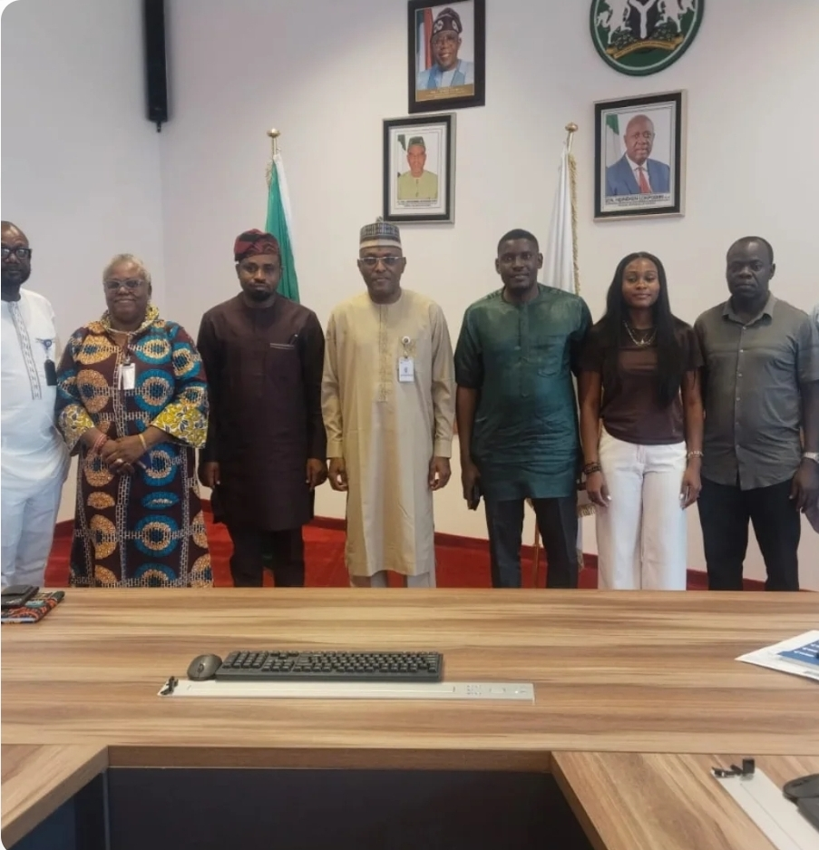
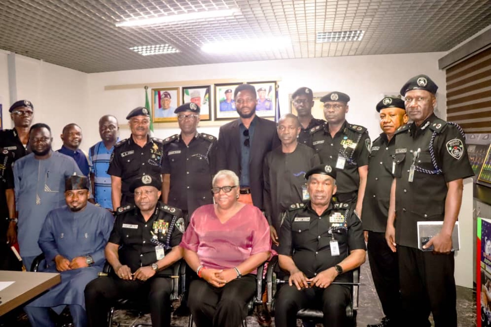
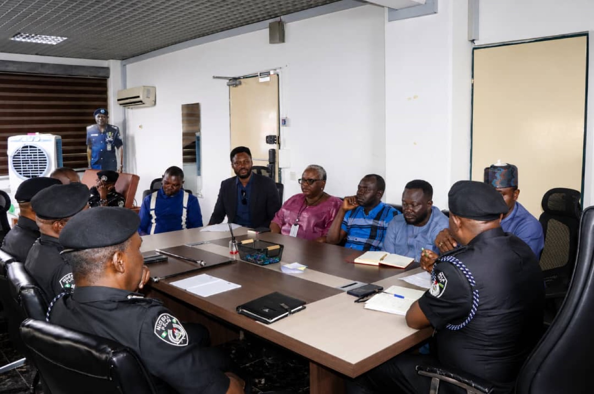
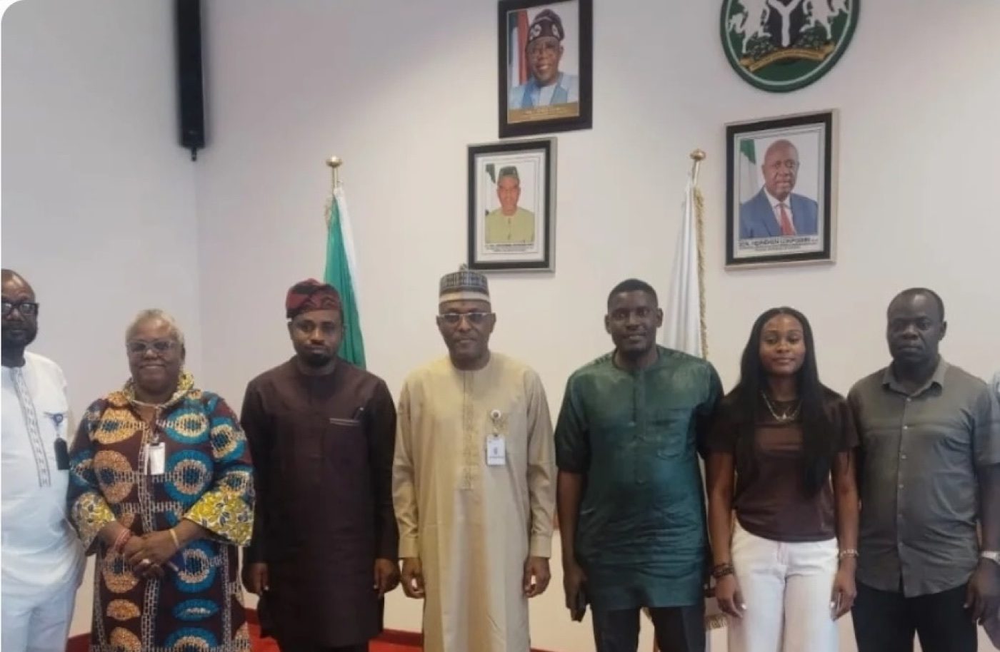
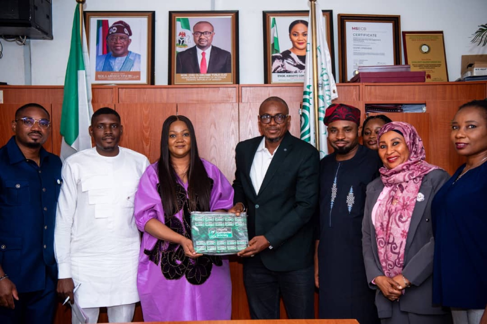
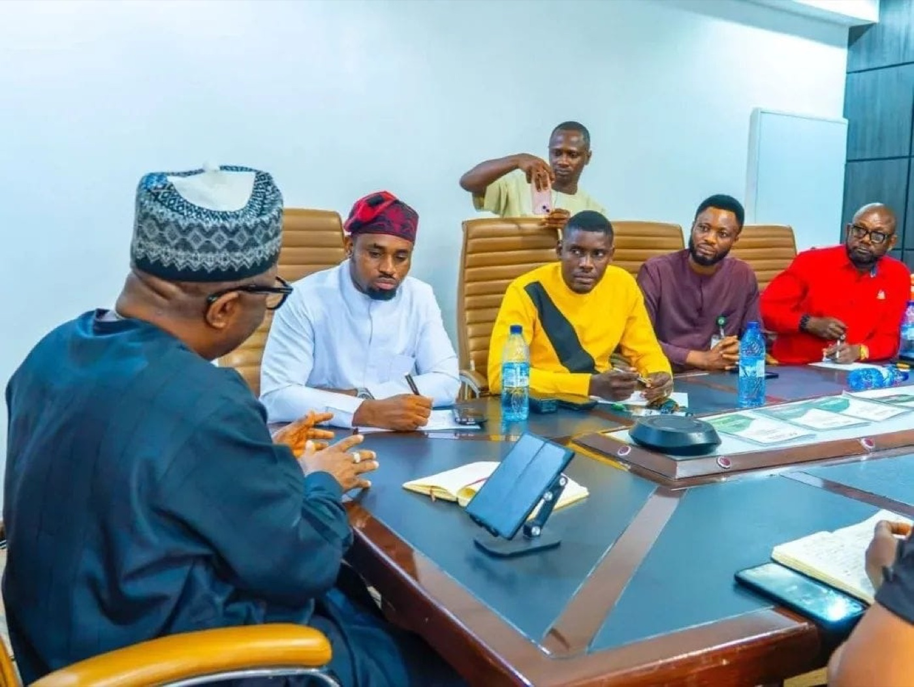
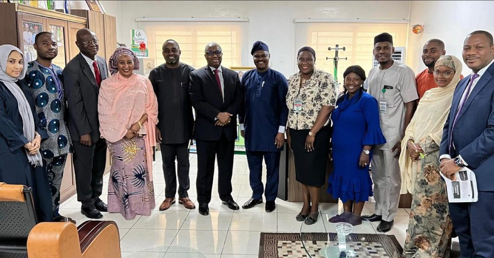
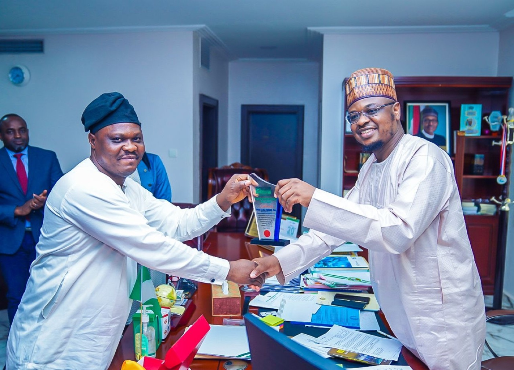
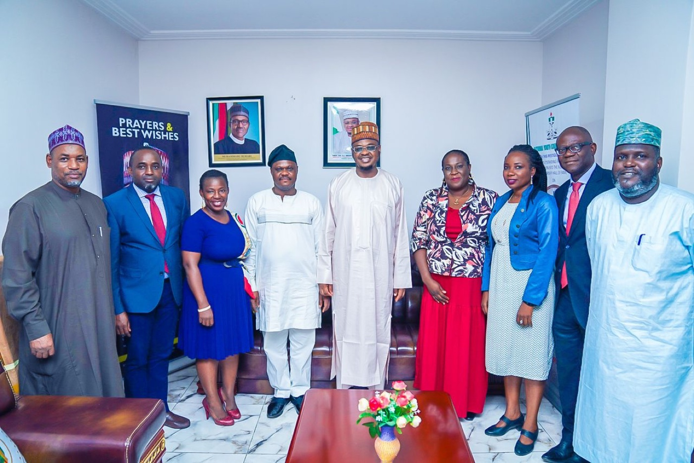
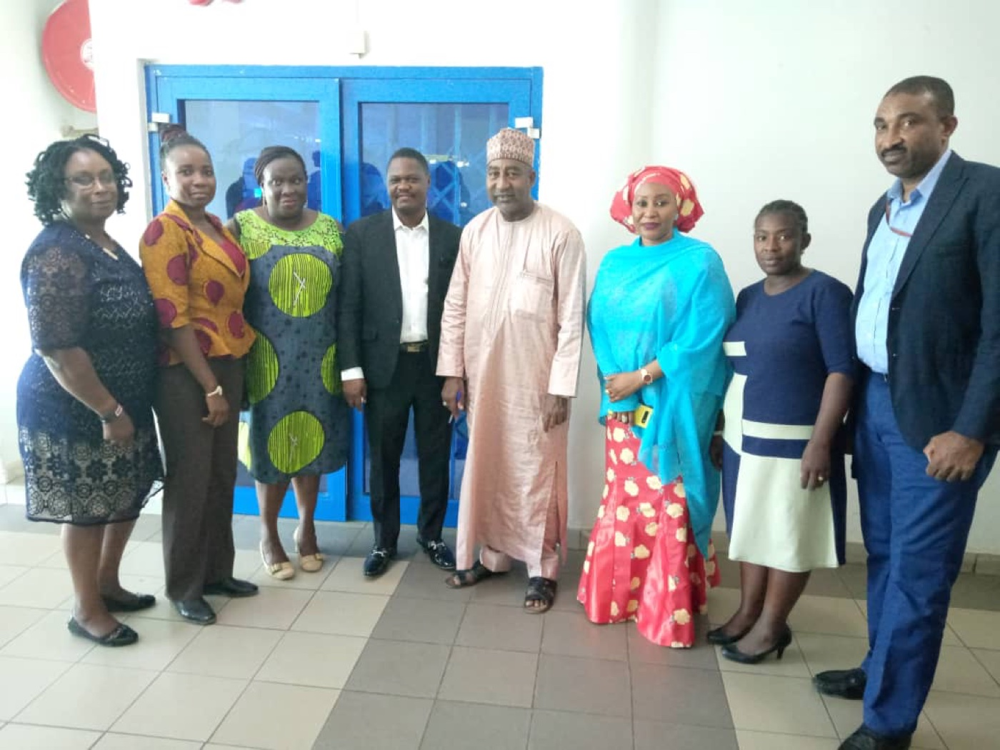

Policy Monday
Focused conversations on policy shaping Nigeria’s digital future.
Meet, learn, and take action
Recurring professional conversations, annual programs, and chapter engagement across Abuja.
Monthly engagement rhythm
The legacy Next Events page currently has no upcoming event listings. Contact the chapter for current dates and registration availability.
Focused conversations on policy shaping Nigeria’s digital future.
Practical learning led by experienced NCS professionals.
Institutional engagement connecting real needs with chapter expertise.
Networking, knowledge, opportunities, and defined follow-up.

Published advocacy records include engagements with PTDF, NDPC, NIMC, and the Nigeria Police Force ICT Department.
Browse advocacy visits







